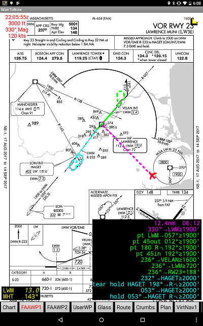
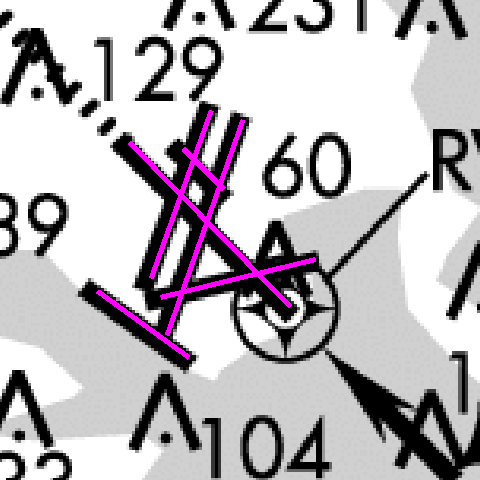
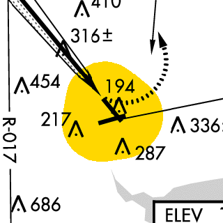

The plates are the images as provided by the FAA. Be sure to validate that the ones you will be using are current and correct before using them in flight.
Always be skeptical regarding any information provided by WairToNow. Accept it only if and when it is confirmed by your aircraft's approved navigation systems and as provided by the FAA on the plate itself. If there is any uncertainty in flight using these plates, immediately execute your missed approach instructions!
In the upper-right corner is a yellow triangle button. Clicking on it will start a count-up timer that can be of use during a non-precision approach. To reset the time to 0:00, click the numbers and it will collapse back to the triangle button, then click the button again to start the counter back up.
The button in the lower-left corner can be used to obtain DME and radial information. Needless to say, the DME and radial information is calculated by using the latest GPS position and the lat/lon of the waypoint from the database. If there is elevation information available for the waypoint (such as with a VOR or localizer), the slant range distance will be shown, otherwise it is a simple over-the-ground distance. Slant-range distances will be shown in italics, and over-the-ground distances will be shown normally.
Clicking the button will bring up a dialog box that you can type a waypoint name in. It will accept airport ICAO ids (eg, KBOS), navaid ids (eg, BOS), and localizers beginning with I, (eg, IBOS or I-BOS), five-letter fix ids (eg, BOSOX), and runway thresholds given by RWnumber (eg, RW04R). You can enter them in upper or lower case, it doesn't matter.
There are also 3 checkboxes provided for each waypoint selected:
If you do not check any boxes, D will be assumed.
The text is formatted in the box to minimize screen area consumed.
To remove the DME information display, click on the numbers and they will collapse back into the triangle button. Click the triangle button to get the numbers back.
To add additional waypoints or modify the list, long-click on the numbers or the triangle button. You may select as many waypoints as you like, provided there is sufficient area on the screen to display them.
The yellow button in the lower right corner displays FAA-provided Coded Instrument Flight Procedure information. In a nutshell, it steps you through the approach.
There are two ways to select the IAF for an approach. One is using the buttons that appear near the IAF on the plate, giving a graphics-based selection. The other is via a menu listing the IAFs in alphabetical order. For a radar-vectored approach, select the (rv) entry from the button near the airport or from the menu.
In addition to the IAFs, some or all of the intermediate fixes (IFs) are selectable with the button near their name or from the menu. This feature is useful when a radar controller clears you direct to an IF. The IF names are shown in lower case whereas the IAF names are shown in upper case.
The yellow button behaves differently depending on what is happening:
NOTE: When an approach has closely spaced IAFs, the buttons may overlap. Either spread them apart with your fingers before selecting or use the menu.
Some plates have more than one approach depicted, such as ILS or LOC. So you will have to select which approach you want as well as which IAF you want. The buttons will show the ILS and LOC strings on each button, so click whichever one you want. The menu will have separate ILS and LOC sections.
When an IAF has been selected, a textual step-by-step description will be shown in the lower right corner of the screen. Also, dots will be drawn on the plate image showing the corresponding route. To collapse the text (but leave the dots intact), do a short click on the text box and it will shrink to a small triangle button. A long click on either the triangle button or text box will prompt you for one of these actions:
The text and dot colors are as follows:
When you initially select an approach, it will draw magenta dots from where you are currently positioned to the IAF that you selected from buttons or the menu. You do not have to fly all the way to that fix. Just intercept the next segment of the approach and when you get established on that segment, it will become current (magenta) and the old magenta dots and text will be removed.
For the radar vector transition (rv), the initial dotted line will track the aircraft heading, showing the pilot where the current radar vector will intercept the final approach course. If the aircraft is headed away from the final approach course, no line will be shown.
The CIFP text often gives altitudes for the legs. Especially in the case of descent, verify the altitude given with that on the plate image itself (in black) before changing altitude.
The altitude displayed in the text box for the runway waypoint (eg, RW16) is not the DA, DH, MDA etc so do not treat it as such! It is the altitude that a normal descent glide path would bring you to over the numbers. You must use the DA, DH, MDA etc provided in the table on the plate image to determine the correct altitude.
Hold and Procedure Turn dots will be depicted based on the aircraft's current ground speed as sensed by the GPS, and assuming one minute legs and standard rate turns. Do not feel obligated to follow what is being depicted by the CIFP dots or text, always operate using best practices.
The display will automatically sequence into the missed approach segment upon entering the first leg of the missed approach procedure (shown in cyan), which usually begins at the runway numbers waypoint (no matter what your altitude is). If you have determined that a missed approach is appropriate prior to that point, you can climb straight ahead until you are approximately over the numbers and let WairToNow assist you, or execute the missed approach unassisted.
The information on the plate image itself as provided by the FAA takes precedence over the CIFP information. If there is any discrepancy or confusion, discontinue use of the CIFP information! A long click on the yellow button or the textual display will remove the dots and text from the display.

 The FAA is providing georeference information for most approach procedures. WairToNow will attempt to use this information where available to do things like identify the aircraft's current position on the plate. The presence of the georeference information will be indicated by the airport runways being overdrawn with magenta lines for the first ten seconds of display. If the magenta lines are in the correct position, ie, they overlay the black FAA-drawn runway lines, the georeference information is most likely valid. Note that all runways may not be lined over, but some are. The important thing is that for those that are lined over, the lines are in the correct position. The positions do not have to be exact but should be very close.
Note that not everything on the plate is drawn to scale. Many navaids and intersections used for the approach would be off the plate if drawn to scale. Such a condition is usually indicated on the plate but sometimes is not. ALWAYS use your aircraft's approved navigation systems to verify your position!
 The plates have a shaded area surrounding the airport indicating the circling approach protected area. The size shown is based on the circling category selected on the Options page. Again, be skeptical of the area indicated and accept it only after you have verified it, ie, it looks of reasonable shape and radius compared to runway length.
For newer plates with a tag next to the word CIRCLING in the table indicating circling MDA, the circling radius (in nm) from runway endpoints based on altitude (in ft) and speed category can be found in this table:
| Alt MSL | Cat A | Cat B | Cat C | Cat D | Cat E |
|---|---|---|---|---|---|
| 1-1000 | 1.3 | 1.7 | 2.7 | 3.6 | 4.5 |
| 1001-3000 | 1.3 | 1.8 | 2.8 | 3.7 | 4.6 |
| 3001-5000 | 1.3 | 1.8 | 2.9 | 3.8 | 4.8 |
| 5001-7000 | 1.3 | 1.9 | 3.0 | 4.0 | 5.0 |
| 7001-9000 | 1.4 | 2.0 | 3.2 | 4.2 | 5.3 |
| 9001+ | 1.4 | 2.1 | 3.3 | 4.4 | 5.5 |
Note: The above altitudes are supposed to be based on approach MDA for the category but the app uses the airport elevation + 200 ft instead (it assumes no MDA could possibly be lower than 200 ft AGL).
For older plates (ie, they do not have the tag), this table applies, with no increases in radius for increases in altitude:
| Cat A | Cat B | Cat C | Cat D | Cat E |
|---|---|---|---|---|
| 1.3 | 1.5 | 1.7 | 2.3 | 4.5 |
WairToNow provides synthetic ILS/DME approach plates for practicing ILS approaches where there is no such approach provided by the FAA. Needless to say, these plates are for use in VFR CONDITIONS ONLY. They do not guarantee obstruction clearance so you must have someone in the aircraft making sure the path is clear.
They are listed along with the other approach plates for any airport, provided they have been enabled on the Options page, with the Show Synth ILS/DME Plates checkbox. They are named IAP-Synth ILS/DME runway.
Since there is no real transmitter, you must use the VirtNav pages to get ILS-style needles to fly by.
If you have downloaded the topography data on the Maint page, the plates will depict the area surrounding the approach with:
If you have downloaded the obstruction data on the Maint page, the plates will depict obstructions on the plate with the usual chart obstruction symbols.
In any case, there must be someone visually confirming a clear path as the depicted approach path does not account for any obstructions that may be encountered while flying the approach.
A .GIF file is generated in the synth_ilsdme directory of the files directory for all viewed synthetic ILS/DME plates. They can be saved or printed with a file manager app. They are named aptid_runway_expdate.gif